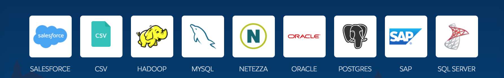
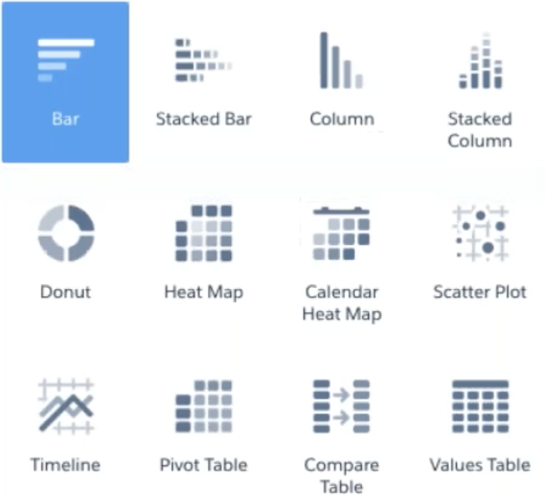
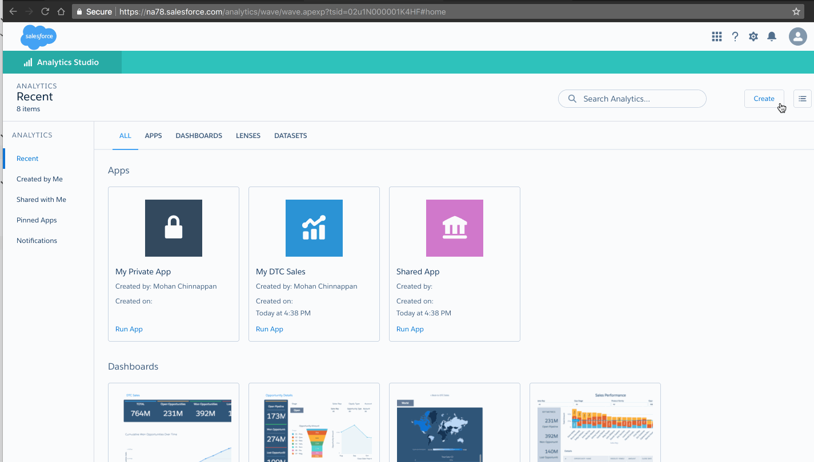
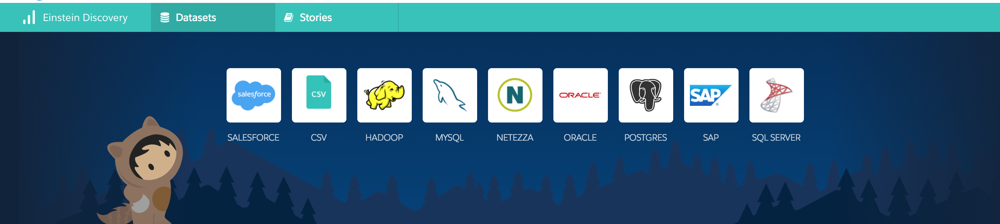
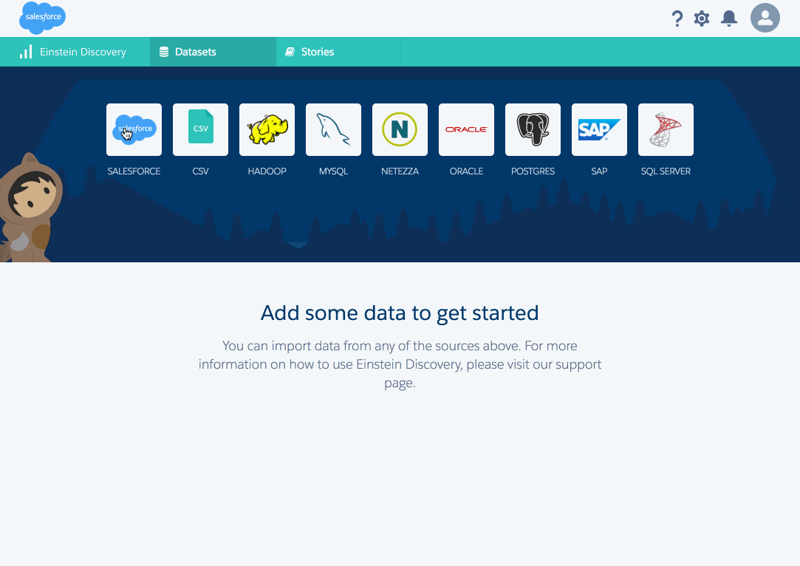
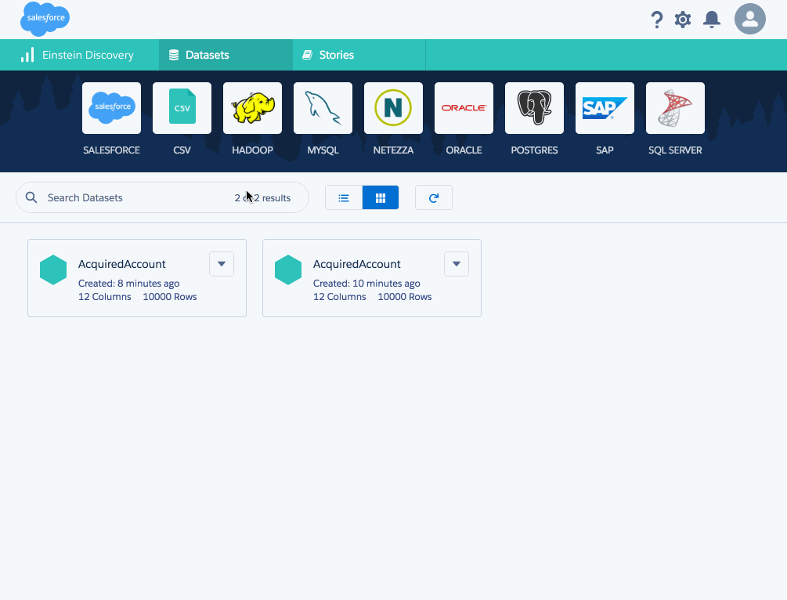

{{appName}}
data to insights to actions
- Native to Salesforce with Mobile support
- Create/Edit objects within
- Embed Einstein Analytics in Sales Cloud objects/records
- Sharing: Share and collaborate on :
- Insights
- Actions
- Separate NoSQL datastore is used
Empowering Sales Team
- Drive intelligent Sales with:
- Einstein Data Discovery
- Predictive Forecasting
- Noise filter: Separate Signals from Noise to focus on rightDeals@rightTime
- Analyze :
- Opportunity waterfall
- Historical Trends
- Quota Progress
- Increase Sales Team productivity by identifying coaching opportunities
- Team members stay-informed with Alerts and Notifications
Analytics Assets
- Dataset
-
 Datasource
Datasource
-
-
 Lenses
Lenses
-
 Dashboards
Dashboards - Apps - Private or Shared
- Analyses and answers about a specific area of your business
Dataset
- Set of Data Sources
- Can Contain data from single Salesforce object or data from external data sources like Oracle, Postgres or MySQL
- You can create dataset by combining data from datasets :
ds3 = ds1 + ds2
Data Sources
Dataset Creation
- Extraction
- Process of bringing data into Einstein Discovery
- Preparation
- Getting that data into a form that’s meaningful to the people exploring it
- Einstein Discovery gives you suggestions on how to improve the quality of your dataset
- It also includes several data transformation and manipulation features.
- You review the suggested changes, and make data improvements to prepare your data for use.
Einstein Discovery suggestions

Sample Data Visualizations
Analytics
- How to get new Insights to every member of your team from your business data using:
- Analytics
- Einstein AI
- Business Data (gold mine) from:
- Salesforce
- ERP
- Data warehouses
- Log files
- Provides self-service business intelligence to your teams
Special Developer Org
Special Developer Org with Analytics
- With Einstein Analytics
- Sample Data
- Sample App
Analytics - make sense of large amounts of data
- how your business is doing?
- predict about what the coming months might bring?

Data Exploration
- Goals for the data exploration - business use cases
- Help in making data-driven decisions: make decisions based on data analysis
Analytics Studio
Analytics App
- Apps allow users to organize and control sharing of their datasets, lenses, and dashboards
Einstein Data Discovery Datasets
Einstein Data Discovery - Salesforce Dataset
Einstein Data Discovery - Oracle Dataset
Einstein Data Discovery - Creating Story

Creating Story with Multiple Datasets

Analytics Dashboards
- Interactive collection of widgets that show query results from your data, whether that data comes from inside or outside Salesforce
- Tell a multifaceted story about your business from different angles

Analytics Dashboards
- You can explore dashboards by clicking displayed elements
- Key metrics are calculated with fresh data from the last dataflow run
- Every chart shows an interactive picture of a filtered database query
- Collaborate with colleagues and to set goals for yourself
- Using notifications, we can set up Analytics to tell when a milestone is reached.
- Get latest about a dashboard in the Chatter feed
Dashboard Demo

Service Manager Overview